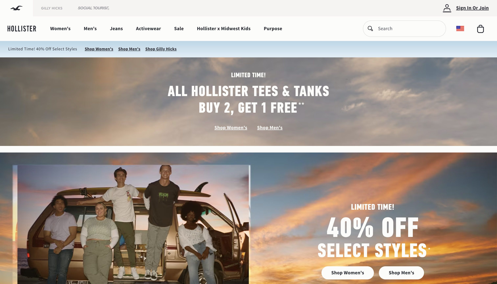
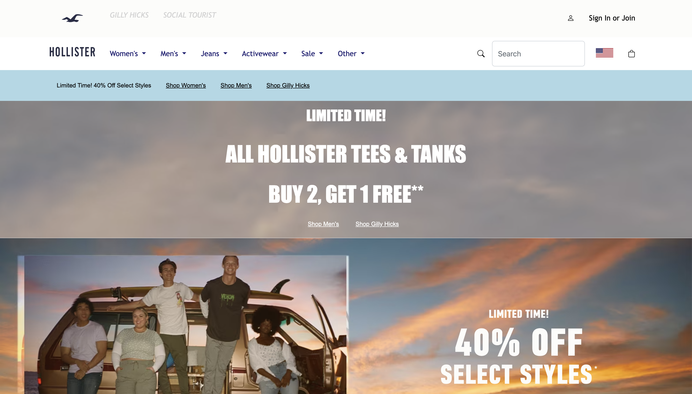

“User interface development sucks.” These words have been spoken silently inside the heads of anyone who’s built a website on at least one occasion. Sure, some people pick it up pretty easily, but any task that involves fiddling with UI is naturally a tedious one. I think of it as a perpetual, never-ending cycle of resizing, reorienting, re-coloring, and worst of all, error debugging when all of your attempts at completing the previously mentioned tasks fail. Before you know it, hours have passed, and all you have is a really fancy navigation bar. These were my experiences as I went through my high school computer science curriculum. We were taught the basics of developing programs with graphics and UI elements. The first program we built was a mock bank terminal that could store account information for bank customers, and access their contact information, address, and funds for deposits or withdrawals. We had absolutely no UI Frameworks or external libraries except for the java GUI library. It was a dreadful week. My lab assignment was two days late, all because I struggled to align all of my input fields in a presentable manner. Luckily, I was able to work it out with my instructor, and he accepted my late lab, still not as perfect as I’d hoped it to be. I wouldn’t exactly say I was jumping at the next opportunity to work on any sort of user interface.
HTML and CSS, like many things in the ICS314 syllabus, were entirely uncharted territory for me until they came up in class. After concluding our crash course on the world of JavaScript and ES6, it was time to dip our toes into web development, as that is the main focus of the ICS314 curriculum overall. After the bank terminal program fiasco, I was certainly nervous about revisiting UI. First, we were given crash courses on HTML and CSS. I was very used to Java-style syntax, so HTML and CSS freaked me out initially, but it still didn’t take long for me to get the hang of it, on account of my consistent study and practice on the material. I will say that being able to create presets using the CSS stylesheet is super helpful and cuts down production time by a significant amount. This is also useful when you want to develop a website whose font stays consistent across most of its pages. The process of creating a webpage was still a little tedious, without a doubt, but also undoubtedly easier than my projects in high school. After passing that week’s assessment, it was time to move on to our first UI framework, Bootstrap5.
Bootstrap 5 makes web development so easy, it feels like cheating. What once took div class after div class now only requires a call to a specific class within the Bootstrap framework’s library. We’re not in Kansas anymore! UI Frameworks are eons away from anything I used during high school. Not only were there presets for commonly used functions and UI elements but there were also libraries included in Bootstrap that had icons for common links used on many sites. The icons required no modifications whatsoever before they were imported into the project files. All I had to do was pick and choose which ones I needed or wanted to implement onto my webpage. There were preset classes for headers, footers, and page body elements that otherwise would have taken a significant amount of time to establish in the CSS stylesheet. For one of our recent projects, we were tasked with choosing any website off the open internet and using our knowledge of HTML, CSS, and Bootstrap5 to create a mockup of that site. I love shopping for clothes at Hollister California, so I chose their site as my template. I used what I learned over the week and created my mockup site. I like to think that the end result of my mockup very closely, and almost identically resembles the original site. The images of both the original Hollister website and my mockup are down below, side by side, for your own comparison.

